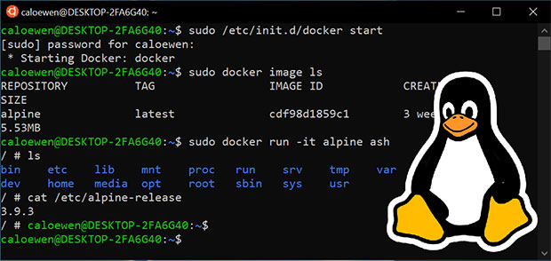

Welcome To Linux

What is Linux ???
Linux is the best-known and most-used open source operating system. As an operating system, Linux is software that sits underneath all of the other software on a computer, receiving requests from those programs and relaying these requests to the computer’s hardware.
Just like Windows, iOS, and Mac OS, Linux is an operating system. In fact, one of the most popular platforms on the planet, Android, is powered by the Linux operating system. An operating system is software that manages all of the hardware resources associated with your desktop or laptop. To put it simply, the operating system manages the communication between your software and your hardware. Without the operating system (OS), the software wouldn?t function.
The Linux operating system comprises several different pieces:
Bootloader
The software that manages the boot process of your computer. For most users, this will simply be a splash screen that pops up and eventually goes away to boot into the operating system.
Kernel
This is the one piece of the whole that is actually called ?Linux?. The kernel is the core of the system and manages the CPU, memory, and peripheral devices. The kernel is the lowest level of the OS.
Init system
This is a sub-system that bootstraps the user space and is charged with controlling daemons. One of the most widely used init systems is systemd? which also happens to be one of the most controversial. It is the init system that manages the boot process, once the initial booting is handed over from the bootloader (i.e., GRUB or GRand Unified Bootloader).
Daemons
These are background services (printing, sound, scheduling, etc.) that either start up during boot or after you log into the desktop.
Graphical server
This is the sub-system that displays the graphics on your monitor. It is commonly referred to as the X server or just X.
Desktop environment This is the piece that the users actually interact with. There are many desktop environments to choose from (GNOME, Cinnamon, Mate, Pantheon, Enlightenment, KDE, Xfce, etc.). Each desktop environment includes built-in applications (such as file managers, configuration tools, web browsers, and games).
Applications
Desktop environments do not offer the full array of apps. Just like Windows and macOS, Linux offers thousands upon thousands of high-quality software titles that can be easily found and installed. Most modern Linux distributions (more on this below) include App Store-like tools that centralize and simplify application installation. For example, Ubuntu Linux has the Ubuntu Software Center (a rebrand of GNOME Software? Figure 1) which allows you to quickly search among the thousands of apps and install them from one centralized location.
>